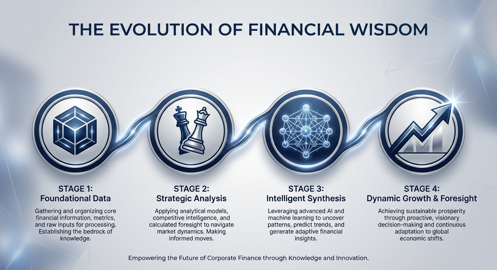
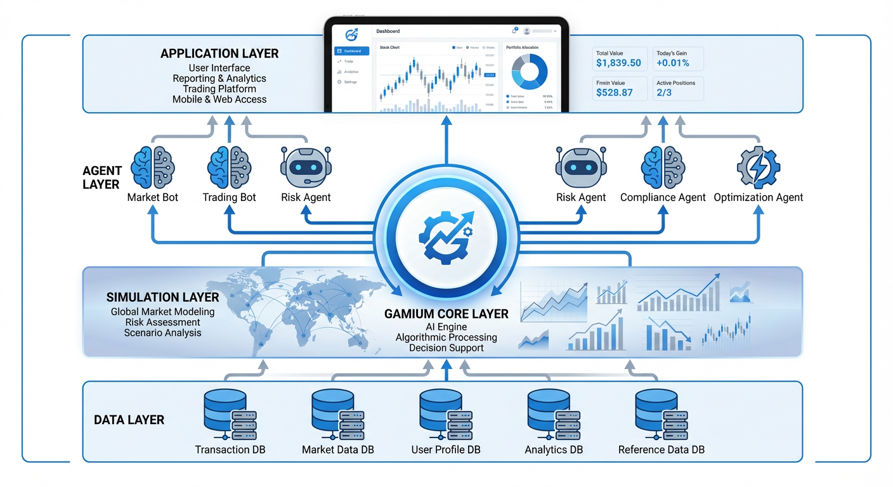

1. 业务场景：将挑战转化为战略机遇
传统金融决策高度依赖历史数据和静态规则，难以应对市场的瞬息万变和复杂博弈。Gamium 将核心业务挑战转化为可推演、可优化的“战略游戏”，让您在虚拟世界中预见未来，找到最优路径。
业务挑战：如何在扩大市场份额的同时，精准控制风险？如何为客群动态定价，以实现长期利润最大化？面对经济下行周期，应采取何种收缩或扩张策略？
Gamium 解决方案：我们构建一个“信贷策略演武场”，让代表不同策略（如：积极扩张型、稳健收益型、行业聚焦型、现有规则型）的AI智能体，在一个模拟了宏观经济周期和客户行为的“数字孪生”市场中，进行长达10-20年的虚拟经营对抗。最终胜出的，将是真正穿越周期的最优策略。
业务挑战：如何构建在极端市场冲击下依然稳健的资产组合？如何平衡高收益资产与避险资产的配置比例？
Gamium 解决方案：将不同的投资组合策略（如：经典60/40、全天候策略、动量策略）作为“玩家”，在模拟了数千种市场情景（包括加息、地缘政治危机、技术颠覆等“黑天鵝”事件）的环境中进行博弈。平台将自动发现那些在最坏情况下依然能保全资本、在最好情况下能捕捉增长的“反脆弱”投资策略。
业务挑战：营销预算有限，应投放给哪些客群？针对不同客户，应采用何种权益组合（返现、积分、航空里程）才能最大化其活跃度和长期价值？
Gamium 解决方案：创建一个“客户经营模拟器”，让不同的营销策略AI进行PK。模拟器会根据客户画像和营销动作，模拟客户的开卡、消费、流失行为。AI将不再是追求短期的开卡率，而是学会如何通过精细化的权益配置和预算投放，实现客户终身价值（LTV）的最大化。
2. 技术落地过程：分四步走的“智慧蝶变”
我们将复杂的AI战略平台落地过程，分解为清晰、可控的四个阶段，确保项目顺利实施并快速产生价值。
-
阶段一：基础构建与世界建模 (1-3个月)
目标：搭建“演武场”的基石——一个反映真实商业逻辑的“数字孪生”世界。
- 数据蒸馏：利用您现有的CRM、贷款记录等历史数据，通过脱敏和统计分析，提炼出客户行为和市场反应的“物理定律”。
- 沙盒构建：创建“用户行为模拟器”和“宏观经济模拟器”。
- 规则封装：将您现有的决策系统（评分卡、规则引擎）接口化，封装成一个代表“现有最佳实践”的基准玩家。
-
阶段二：模拟对抗与基准测试 (3-6个月)
目标：量化现有策略的优劣，并为AI的进化树立一个明确的超越目标。
- 多策略部署：在Gamium平台上部署多个策略“玩家”，包括封装好的“现有规则玩家”和几个初始的、基于简单逻辑的AI玩家。
- 首次模拟：进行首次长周期模拟对抗，观察不同策略在模拟经济周期中的表现，收集基准数据。
- 价值评估：定义并验证“长期经营健康度”评分函数，作为衡量所有策略优劣的“北极星指标”。
-
阶段三：AI训练与策略发现 (6-12个月)
目标：启动AI的“闭关修炼”，让其通过海量自我博弈，发现超越人类经验的全新策略。
- 启动AlphaZero循环：AI智能体开始在沙盒中进行数百万次的“自我对弈-学习-进化”循环。
- 策略涌现：观察并记录AI发现的、反直觉但高效的“涌现策略”，例如在特定市场信号出现时进行反周期操作。
- 性能监控：持续监控AI策略的评分，直至其稳定地超越“现有规则玩家”。
-
阶段四：融合应用与价值实现 (12个月+)
目标：将模拟中验证的卓越策略，安全、平滑地应用到真实业务中，创造商业价值。
- 影子模式运行：将最优AI策略部署到生产环境，与现有系统并行运行，作为决策“顾问”，但不直接执行。
- A/B测试：选取小范围业务线或客户群，进行A/B测试，用真实业绩验证AI策略的优越性。
- 人机协同决策：AI成为核心决策引擎，业务专家则升级为“策略的定义者和监督者”，与AI共同探索新的业务增长点。
3. 应用架构：无缝融入，赋能现有IT生态
Gamium并非要颠覆您现有的IT系统，而是作为一个高阶的“战略大脑”，无缝地构建于您现有的数据和应用基础之上，赋能您的决策能力。
上图展示了Gamium如何与银行现有系统协同工作。它从您的数据中台和核心系统获取“养料”，在自身的模拟和博弈环境中进行“思考”，最终将“智慧”（最优策略）反馈给业务应用系统。
架构分层解析：
- 数据与基础层 (Data & Foundation Layer):
您现有的核心银行系统、CRM、数据仓库、数据中台。这是所有智慧的源头，Gamium通过标准接口安全地访问经过脱敏和整合的数据。 - 模拟与环境层 (Simulation & Environment Layer):
这是我们为您量身打造的“数字孪生”世界。包含用户行为模拟器和宏观经济模拟器，其所有规则均由您的历史数据校准，确保高度真实性。 - Gamium 核心平台层 (Gamium Core Platform):
平台的大脑和心脏。包含负责驱动模拟进程的回合引擎、定义商业逻辑的规则引擎、以及与AI智能体交互的接口层。 - 策略与智能体层 (Strategy & AI Agent Layer):
所有“玩家”的集合。这里不仅有代表过去的“现有规则智能体”，更有不断学习和进化的“AlphaZero智能体”。 - 应用与展示层 (Application & Presentation Layer):
最终的价值呈现。通过一个可视化的**“战略演武场”仪表盘**，决策者可以直观地观察不同策略的对抗过程、关键指标和最终结果，为商业决策提供前所未有的洞察力。
4. 经济价值：从降本增效到重塑竞争优势
引入Gamium平台，将为您的企业带来可量化的财务回报和难以估量的战略价值。
提升资产回报率 (ROA)
通过动态优化信贷产品的额度与定价组合，AI策略能够在同等风险水平下，发现利润更高的资产配置方案。预计可提升核心业务ROA 5%-15%。
降低信用损失
AI能提前识别宏观风险与特定客群的关联性，通过反周期的、前瞻性的风险管理策略，有效规避潜在的大规模违约。预计可降低不良贷款率 (NPL) 10%-20%。
增强市场竞争力
快速模拟并验证新产品、新市场的可行性，将产品创新周期从数月缩短至数周。在竞争对手还在依赖历史数据时，您已在未来市场中找到了制胜蓝图。
发现“未知”的知识
AI最大的价值在于发现人类专家难以察觉的、隐藏在复杂数据背后的“涌现策略”，为您带来非对称的竞争优势，开辟全新的蓝海市场。
培养未来领袖
“战略演武场”不仅是AI的训练场，更是培养高层管理人员和业务骨干的绝佳工具。让他们在零风险的环境中，锻炼穿越周期的战略决策能力。
提升监管合规性
可以将所有监管红线（如资本充足率、不良率上限）作为AI必须遵守的硬性规则，确保所有被发现的“最优策略”都在合规的边界之内，从根本上降低合规风险。
准备好迎接决策的未来了吗？
立即联系我们，开启您企业的“战略演武场”之旅。我们将为您提供专属的解决方案演示，并共同探讨如何为您量身打造第一个POC（概念验证）项目。
申请解决方案演示